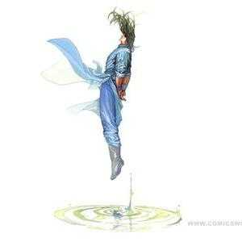

名字:
胡寒志 性别:男

介绍:听我吹牛逼，赛过打飞机
问题
答案新建于:2015-07-24 11:26:20 AM，更新于2015-07-24 03:09:22 PM
跳页:
正文:
穿超短裙是什么体验我不知道，但是看到穿超短裙的女孩子不小心把裙子掀起来露出里面的内内并且毫无所觉是什么体验我可是清楚的很。
两个故事不吐不快。
先去吃午饭，下午有空更。
吃饱喝足,先写第一个。南京地铁里有运行线路图，通常在楼梯口往前几步远的地方。晚上下班，我急匆匆地进入地铁，下了楼梯，走了两步一抬头，前面一姑娘穿着淡色碎花短裙，背着双肩包，正聚精会神地盯着线路图呢，我再定睛一瞅，嚯，这姑娘今年是本命年啊。估计是那姑娘背包的时候把包从底往上提溜的，双肩包把裙摆完全的掀起来并卡死了，那大红的裤衩啊，比我要喷出来的鼻血还鲜艳。我跑的急，后面楼梯上还有一群人正要下来呢，我三步并做两步，上去就帮她扯了一下，转身就走，想学雷锋不留名。别误会，我扯的是书包，不是裙子。那姑娘感觉书包被人扯了下，转头用盯小偷的眼神盯着我看。我心里一下子就刺毛了，哥哥我是做好人好事啊，又回来告诉她：姑娘，你书包把你裙摆扯起来了，并且给了她一个哥哥我不约的坚定眼神，头也不回昂首离去。昂头的原因你懂得
先去睡一觉，回来再更一个。
第二个故事来了。
从新校区坐公交去老校区，在公交站台等车。一抬头，眼睛被晃得睁不开。站台的另一头一姑娘拎着行李箱背着背包在认真看公交站牌，她穿着套裙，外面是长度及脚踝的黑色薄纱长裙，里面穿了个黑色不透明的包臀短裙，又是背包的时候往上提溜了一下。只能说姑娘皮肤真白，透过黑色薄纱把我眼刺得流泪啊。我刚想跑过去提醒一下，可是我等的公交车就到了，我急忙上车坐好，抬头发现那个姑娘也上了车，我掏出手机，再便签上写下：你的裙子被背包带起来了。伸到姑娘的面前，姑娘楞了一下，看了一眼，然后从脸红到了脖子。我潇洒转身，回到自己位子上刷起了知乎。
所以，姑娘们，穿短裙一定不要背双肩包，假如执意背双肩包，一定要注意背得时候不要从底往上提溜。
跳页: